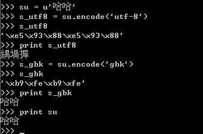
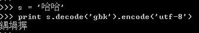
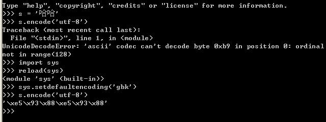

在本文中，以'哈'来解释作示例解释所有的问题，“哈”的各种编码如下：
1. UNICODE (UTF8-16)，C854；
2． UTF-8，E59388；
3． GBK，B9FE。
一、python中的str和unicode
一直以来，python中的中文编码就是一个极为头大的问题，经常抛出编码转换的异常，python中的str和unicode到底是一个什么东西呢？
在python中提到unicode，一般指的是unicode对象，例如'哈哈'的unicode对象为
u'\u54c8\u54c8'
而str，是一个字节数组，这个字节数组表示的是对unicode对象编码(可以是utf-8、gbk、cp936、GB2312)后的存储的格式。这里它仅仅是一个字节流，没有其它的含义，如果你想使这个字节流显示的内容有意义，就必须用正确的编码格式，解码显示。
例如：

对于unicode对象哈哈进行编码，编码成一个utf-8编码的str－s_utf8,s_utf8就是是一个字节数组，存放的就是'\xe5\x93\x88\xe5\x93\x88'，但是这仅仅是一个字节数组，如果你想将它通过print语句输出成哈哈，那你就失望了，为什么呢？
因为print语句它的实现是将要输出的内容传送了操作系统，操作系统会根据系统的编码对输入的字节流进行编码，这就解释了为什么utf-8格式的字符串“哈哈”，输出的是“鍝堝搱”，因为 '\xe5\x93\x88\xe5\x93\x88'用GB2312去解释，其显示的出来就是“鍝堝搱”。这里再强调一下，str记录的是字节数组，只是某种编码的存储格式，至于输出到文件或是打印出来是什么格式，完全取决于其解码的编码将它解码成什么样子。
这里再对print进行一点补充说明：当将一个unicode对象传给print时，在内部会将该unicode对象进行一次转换，转换成本地的默认编码（这仅是个人猜测）
二、str和unicode对象的转换
str和unicode对象的转换，通过encode和decode实现，具体使用如下：

将GBK'哈哈'转换成unicode，然后再转换成UTF8
三、Setdefaultencoding

如上图的演示代码所示：
当把s(gbk字符串)直接编码成utf-8的时候，将抛出异常，但是通过调用如下代码：
import sys
reload(sys)
sys.setdefaultencoding('gbk')
后就可以转换成功，为什么呢？在python中str和unicode在编码和解码过程中，如果将一个str直接编码成另一种编码，会先把str解码成unicode，采用的编码为默认编码，一般默认编码是anscii，所以在上面示例代码中第一次转换的时候会出错，当设定当前默认编码为'gbk'后，就不会出错了。
至于reload(sys)是因为Python2.5 初始化后会删除 sys.setdefaultencoding 这个方法，我们需要重新载入。
四、操作不同文件的编码格式的文件
建立一个文件test.txt，文件格式用ANSI，内容为:
abc中文
用python来读取
# coding=gbk
print open("Test.txt").read()
结果：abc中文
把文件格式改成UTF-8：
结果：abc涓枃
显然，这里需要解码：
# coding=gbk
import codecs
print open("Test.txt").read().decode("utf-8")
结果：abc中文
上面的test.txt我是用Editplus来编辑的，但当我用Windows自带的记事本编辑并存成UTF-8格式时，
运行时报错：
Traceback (most recent call last):
File "ChineseTest.py", line 3, in
print open("Test.txt").read().decode("utf-8")
UnicodeEncodeError: 'gbk' codec can't encode character u'\ufeff' in position 0: illegal multibyte sequence
原来，某些软件，如notepad，在保存一个以UTF-8编码的文件时，会在文件开始的地方插入三个不可见的字符（0xEF 0xBB 0xBF，即BOM）。
因此我们在读取时需要自己去掉这些字符，python中的codecs module定义了这个常量：
# coding=gbk
import codecs
data = open("Test.txt").read()
if data[:3] == codecs.BOM_UTF8:
data = data[3:]
print data.decode("utf-8")
结果：abc中文
五、文件的编码格式和编码声明的作用
源文件的编码格式对字符串的声明有什么作用呢？这个问题困扰一直困扰了我好久，现在终于有点眉目了，文件的编码格式决定了在该源文件中声明的字符串的编码格式，例如：
str = '哈哈'
print repr(str)
a.如果文件格式为utf-8，则str的值为：'\xe5\x93\x88\xe5\x93\x88'（哈哈的utf-8编码）
b.如果文件格式为gbk，则str的值为：'\xb9\xfe\xb9\xfe'（哈哈的gbk编码）
在第一节已经说过，python中的字符串，只是一个字节数组，所以当把a情况的str输出到gbk编码的控制台时，就将显示为乱码：鍝堝搱；而当把b情况下的str输出utf-8编码的控制台时，也将显示乱码的问题，是什么也没有，也许'\xb9\xfe\xb9\xfe'用utf-8解码显示，就是空白吧。>_<
说完文件格式，现在来谈谈编码声明的作用吧，每个文件在最上面的地方，都会用# coding=gbk 类似的语句声明一下编码，但是这个声明到底有什么用呢？到止前为止，我觉得它的作用也就是三个：
- 声明源文件中将出现非ascii编码，通常也就是中文；
- 在高级的IDE中，IDE会将你的文件格式保存成你指定编码格式。
- 决定源码中类似于u'哈'这类声明的将‘哈'解码成unicode所用的编码格式，也是一个比较容易让人迷惑的地方，看示例：
#coding:gbk
ss = u'哈哈'
print repr(ss)
print 'ss:%s' % ss
将这个些代码保存成一个utf-8文本，运行，你认为会输出什么呢？大家第一感觉肯定输出的肯定是：
u'\u54c8\u54c8'
ss:哈哈
但是实际上输出是：
u'\u935d\u581d\u6431'
ss:鍝堝搱
为什么会这样，这时候，就是编码声明在作怪了，在运行ss = u'哈哈'的时候，整个过程可以分为以下几步：
1) 获取'哈哈'的编码：由文件编码格式确定，为'\xe5\x93\x88\xe5\x93\x88'（哈哈的utf-8编码形式）
2) 转成 unicode编码的时候，在这个转换的过程中，对于'\xe5\x93\x88\xe5\x93\x88'的解码，不是用utf-8解码，而是用声明编码处指定的编码GBK，将'\xe5\x93\x88\xe5\x93\x88'按GBK解码，得到就是''鍝堝搱''，这三个字的unicode编码就是u'\u935d\u581d\u6431'，至止可以解释为什么print repr(ss)输出的是u'\u935d\u581d\u6431' 了。
好了，这里有点绕，我们来分析下一个示例：
#-*- coding:utf-8 -*-
ss = u'哈哈'
print repr(ss)
print 'ss:%s' % ss
将这个示例这次保存成GBK编码形式，运行结果，竟然是：
UnicodeDecodeError: 'utf8' codec can't decode byte 0xb9 in position 0: unexpected code byte
这里为什么会有utf8解码错误呢？想想上个示例也明白了，转换第一步，因为文件编码是GBK，得到的是'哈哈'编码是GBK的编码'\xb9\xfe\xb9\xfe'，当进行第二步，转换成 unicode的时候，会用UTF8对'\xb9\xfe\xb9\xfe'进行解码，而大家查utf-8的编码表会发现，utf8编码表（关于UTF- 8解释可参见字符编码笔记：ASCII、UTF-8、UNICODE）中根本不存在，所以会报上述错误。